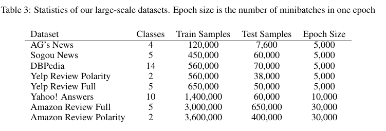

Character-level Convolutional Networks for Text Classification
文献翻译：文本分类字符级别卷积网络
authors: Xiang Zhang, Junbo Zhao, Yann LeCun
原文: Character-level Convolutional Networks for Text Classification
Abstract
本文提供了使用字符级卷积网络（ConvNets）进行文本分类的实证研究。我们构建了几个大型数据集，以表明字符级卷积网络可以达到最新水平或竞争结果。可以与传统模型（例如词袋BoW，n-grams 其 TFIDF 变体）以及深度学习模型（例如基于单词的 ConvNets 和递归神经网络）进行比较。
1. Introduction
文本分类是自然语言处理的经典研究问题，其中需要为自由文本文档分配预定义的类别。文本分类研究的范围从设计最佳特征到选择最佳的机器学习分类器。迄今为止，几乎所有的文本分类技术都是基于单词的，其中一些有序的单词组合（例如 n-gram）的简单统计通常表现最佳[1]。
另一方面，许多研究人员发现卷积网络（ConvNets）[2][3]非常适合用于从原始信息中提取信息，因而卷积网络从计算机视觉领域被扩展到语音识别等领域。特别地，深度学习研究中早期使用的时延网络本质上是对序列数据进行建模的卷积网络。[4][5]。
在本文中，我们探索将文本视为一种字符级别的原始信号，并对其应用时间（一维）卷积网络 ConvNets。本文仅使用分类任务作为例证，说明 ConvNets 理解文本的能力。从以往的研究，我们知道 ConvNets 通常需要大规模的数据集才能很好地工作，因此我们也构建了几个这样的数据集。并提供了传统模型和其他深度学习模型的一组比较。
已有文献探索了将卷积网络应用于文本分类或整个自然语言处理中，并已经证明，ConvNets 可以直接应用于分布[6][7]或离散[8]的词嵌入（Word embedding）中，而无需了解语言的语法或语义结构。这些方法已被证明与传统模型相比具有竞争力。
目前已有一些使用字符级别特征进行自然语言处理的相关研究工作。其中包含使用带有线性分类器的字符级别 n-gram[9],以及将字符级别特征合并到 ConvNets[10][11]。这些 ConvNet 方法使用单词作为基础，在单词[10:1]或单词 n-gram[11:1] 的分布式表示上提取字符级别特征，对词性标记和信息检索进行改进。
本文是首次仅在字符级别上应用 ConvNets 的文章。我们证明，在大规模数据集上进行训练时，除了以前的研究得出的，即 ConvNets 不需要语言的语法或语义结构方面的知识外，深层 ConvNets 也是不需要单词的相关的知识的。这种工程上的简化对于可以适用于不同语言的单个系统而言至关重要，因为字符始终是文本必要的构成元素，不管是否将文本分割成单词。仅处理字符还具有以下优点：可以自然地学习诸如拼写错误和表情符号之类的异常字符组合。
2. Character-level Convolutional Networks
在本节中，我们经介绍文本分类的字符级别 ConvNets 的设计。该设计是模块化的，并通过反向传播[12]计算梯度来执行优化。
2.1 Key Modules
主要组件是时间卷积模块，它仅计算一维卷积。假设有一个离散输入函数和一个离散核函数。步长（stride）为，和之间的卷积 定义如下
其中是一个偏置常数。就像在计算机视觉上的传统卷积网络一样，该模块由一组这样的内核函数 来进行参数化，通常称为权重（weights），以及一组输入 和输出 。我们称每个 为输入特征，每个为输出特征，用 表示输入特征的大小， 表示输出特征的大小。通过在 和 之间卷积在 上的总和来表示输出 。
帮助我们训练更深层模型的一个关键模块是时间最大池化（temporal max-pooling，一维最大池化）。它是计算机视觉[13]中使用的最大池化模块的一维版本。给定一个离散输入函数 ， 的 max-pooling 函数 定义如下
其中 是一个偏置常数。这样的池化模块能使我们训练超过 6 层的 ConvNets 模型，而其他的层均会失败，[14]中的分析可能对此有所启发。
在模型中使用的非线性修正器阈值函数 ，这让我们模型中的卷积层能与修正线性单元类似（ReLUs）[15]。算法使用随机梯度下降（SGD），其最小批量为 128，使用动量（momentum）为 0.9，初始步长为 0.01，每 3 个 epoch 减半 10 次。每个 epoch 都采用固定数量的随机训练样本，这些样本在各个类别上使用均匀采样。稍后将详细给出每个数据集使用的样本数。模型使用 Torch 7[16]实现。
2.2 Character quantization
我们的模型接收一个由编码后字符形成的序列作为输入。通过为输入的语言规定字母表（alphabet），然后使用字符的 one-hot 编码来量化每个字符。然后将字符序列转换为这样的序列，一个大小为固定长度的向量。序列中超过长度的所有字符都会被忽略，空字符或不在字母表中字符用 0 向量进行量化表示。字符量化的顺序与字符读取的顺序是相反的，因此最新读取的字符始终处于输出的头部，从而使全连接层更易于将权重与最新读取的字符相关联。
我们所有模型使用的字符表包含 70 个字符，其中包含 26 个英文字母，10 个数字，33 个其他字符和换行符。如下：

之后，我们还与使用了不同字母表的模型进行对比，在这些模型的字母表中区分大写和小写字母。
2.3 Model Design
我们设计两个卷积神经网络——一个大的和一个小的。它们都有 9 层，其中 6 层卷积层和 3 层全连接层。见图 Figure 1。
因为我们字符量化的方法，模型输入的特征（feature）固定为 70，并且输入特征长度（length）为 1014。似乎1014个字符已经可以捕获大多数感兴趣的文本。我们还在 3 个全连接层之间插入两个 dropout 层[17]来进行正则化。它们的 dropout rate 为 0.5。Table 1列出了卷积层的配置，Table 2列出了全连接层的配置。
我们使用高斯分布来初始化权重。大模型初始化使用的均值和标准差为，小模型初始化使用的均值和标准差为。
对于不同的问题，模型的输入的长度可能不同（例如我们的模型使用 ），在我们模型的设计中，很容易知道，给定输入长度，最后一个卷积层之后（所有全连接层之前）的的输出帧长度为 。该数字乘以第 6 层的帧大小将得出第一个全连接层的输入维度。
2.4 Data Augmentation using Thesaurus
许多研究人员发现，适当使用数据增强技术对于控制深度学习的泛化错误很有作用。当我们找到模型具有适当的不变属性时，这些技术通常效果很好。就文本而言，使用图像或语言识别中进行信号转换来增强数据是不合理的，因为字符的确切顺序可能会形成严格的句法和语义。因此，进行数据增强的最佳方法是使用人工措词，但这是不现实的且昂贵的，因为我们数据集中的样本量通常非常大。因此，对我们而言，数据增强中最自然的选择是使用同义词来替换单词或短语。
我们使用英文同义词来进行数据增强实验，该词库是从 LibreOffice 项目中使用的 mytheas 组件中获得的。该词库又是从 Word-Net[18]中获取的，其中单词或短语的每个同义词都按照与最常见的含义的语义接近度来进行排序。为了确定要替换的单词数，我们从给定的文本中提取所有可替换的单词，然后随机选择 个要替换的单词来替换。 的概率由参数为 的几何分布确定，其中 。给定单词的同义次的索引 也由另一种几何分布来确定，其中 。这样，当同义词偏离最常见的含义时，其被选中的可能性就会变小，我们将使用该数据增强技术，其中 。
3. Comparison Models
为了公平地比较竞争的模型，我们使用传统和深度学习方法进行了一系列实验。我们尽力选择可以提供可比且具有竞争力的结果的模型，并且在不进行任何模型选择的情况下，如实地报告实验结果。
Bag-of-words and its TFIDF. 对于每一个数据集，bag-of-words 模型通过选择训练集中最频繁的 50,000 个单词来构造模型。对于常规的 bag-of-word方法，我们用每个单词的计数作为特征。对于 TFIDF（term-frequency inverse-document-frequency）[19]版本，我们使用单词的计数作为词频。逆文档频率是样本总数与训练样本子集中样本数的除数的对数。然后通过除以最大特征数值来进行正则化。
Bag-of-ngrams and its TFIDF. bag-of-ngrams 模型通过从每一个数据集中的训练集中选择 500,000 个最频繁 n-grams （最多5-grams）来构建。特征的计算方式与 bag-of-words 模型一样。
Bag-of-means on word embedding. 我们也有一个实验模型从每个数据集的训练子集的 word2vec[20]上应用 k 均值，然后将这些学习的方法用作聚类词的代表。我们考虑了在训练子集中出现超过 5 次的所有单词。嵌入的维数为 300。bag-of-means 特征的计算方式与 bag-of-words 模型中的方式一样。均值数为 5000。
3.1 Deep Learning Methods
最近，深度学习方法一直开始应用于文本分类中，我们选择两种简单且具有代表性的模型进行比较。其中一种是基于单词的 ConvNets，另一种是简单的长期短期记忆网络模型（LSTM）[^11]。
Wrod-based ConvNets. 在有关基于单词的 ConvNets 用于文本分类的大量最新研究中，区别之一是选择使用预训练的或端到端的学习的单词表示形式。我们使用预训练的 word2vec[20:1]嵌入[7:1]和查找表[21]进行比较。在两种情况下，嵌入大小均为 300，与 bag-of-means 模型相同。为了确保公平地进行比较，每种情况下的模型在层数和每层输出大小方面均与字符级别 ConvNets 相同。还进行了同义词替换数据增强。
Long-short term memory. 我们还提供了与 RNN 网络模型（即长期短期记忆网络，LSTM[^11]）的比较。该 LSTM 模型是基于单词的，与上文的模型一样，使用大小为 300 的预训练 word2vec 嵌入。通过取所有的 LSTM 单元的输出平均值形成一个特征向量，然后对该特征向量使用多项逻辑回归来构建模型。模型输出的维度为 512。本文使用的 LSTM 变体是常见的 “vanilla” 结构[22][23]。我们还使用了梯度正则，取值为 5。见 Figure 2。
3.2 Choice of Alphabet
对于英文字母表，一个明显的选择数是否区分大小写字母。本文给出了选择的相关实验结果，结果表明，当考虑区分大小写时，通常（但并非总是）会得到比较差的结果。一种可能的解释是语义不会随字母大小写发生改变，因此正则化必然是存在好处的。
4. Large-scale Datasets and Results
以前在不同领域对 ConvNets 进行的研究表明，它们通常与大规模的数据集配合进行训练。特别是当模型使用低级原始特征表示的时候（本文中使用的字符级别）。然而，大多数用于文本分类的开放数据集都非常小，并且大规模的数据集通常被划分成较小的训练集以及测试集[24]。因此，我们没有使用它们，而自己构建几个大规模数据集，范围从数十万到数百万个样本，见 Table 3。

AG’s new corpus.（AG 新闻语料）我们通过网络[13:1]获取了 AG 新闻文章语料库。它包含来自 2000 多个新闻来源的 496,835 个分类的新闻文章。我们仅从标题和描述字段中选取该语料库中最多的 4 个类别来构建数据集。每个类别的训练样本数据量为 30,000，测试数量为 1900。
Sogou’s new corpus. 该数据集是 SogouuCA 和 SogouCS 新闻语料库的组合[25]，总共包含各种主题中的 2,909,551 调新闻文章。然后，通过手动分类新闻的领域名，我们使用新闻的 URL 标记新闻。这使我们获得了大量带有其类别标签的新闻文章。类别很多，但大多数包含很少的文章。我们选择 5 个类别-“体育”，“金融”，“娱乐”，“汽车”和“技术”。每个班级选择的训练样本数量为 90,000，测试集为 12,000。尽管这是中文数据集，我们使用 pypinyin 包集合 jieba 分词来生成拼音。然后将英文模型应用于此数据集则无需进行任何更改。其中使用标题和内容字段。
DBPedia ontology dataset. DBpedia 是一个众包社区，旨在从 Wikipedia 中提取结构化信息[26]。通过从 DBPedia 2014中选择 14 个不重叠的类来构建 DBPedia 本体数据集。从这 14 个类别中的每一个类中，我们随机选择 40,000 个训练样本和 5,000 个测试样本。我们用于此数据集的字段包含每个 Wikipedia 文章的标题和摘要。
Yelp reviews. Yelp 评论数据集来自 2015 年的 Yelp 数据集挑战赛。该数据集包含 1,569,264 个具有评论文本的样本。从该数据集构建了两个分类任务——一个预测用户给定的恒星总数，另一个通过考虑恒星 1 和 2 为负，恒星 3 和 4 正，来预测极性标签。完整的数据集在每颗恒星中具有 130,000 个训练样本和 10,000 个测试样本，而极性数据集在每个极性中具有 280,000 个训练样本和 19,000 个测试样本。
Amazon reviews. 我们从斯坦福网络分析项目 （SNAP）获得了 Amazon 评论数据集，该数据集横跨 18 年，来自 2,643,053 个产品的 6,43,669 个用户中的 34,686,770 条评论[27]。与 Yelp 评论数据集相似，我们也构建了 2 个数据集——一个完整分数预测和另一个极性预测。完整的数据集包含每个类别中的 600,000 个训练样本和 130,000 个测试样本，而极性数据集则包含 1,800,000 个训练样本和 200,00 个测试样本。
Table 4列出了我们从这些数据集中获得的所有适用与模型的测试错误。请注意，由于我们没有中文词库，因此使用搜狗数据集并没有使用数据增强。我们将最佳结果标记为蓝色，将较差结果标记为红色。
5. Discussion
为了更好地了解 Table 4 中的结果，我们在本节中提供了一些经验分析。为了方便我们的分析，我们在Figure 3 中提供了相对于比较模型的相对误差。
这些图的每一个都是通过比较模型和字符级别 ConvNets 模型的误差之间的差来计算的，然后除以比较模型误差。图中的所有 ConvNets 都是带有词库数据增强的大型模型。
字符级别 ConvNets 是一个高效的方法。我们实验中的最重要的结论是，字符级别的 ConvNets 可以不需要单词的情况下进行文本分析。这有力地证明了，语言也可以被视为与任何其他种类类似的信号。
**数据集大小在传统模型与 ConvNets 模型之间通常差异明显。**从 Figure 3 中可以明显看出，较大的数据集往往表现更好。像 n-grams TFIDF 这样的传统方法荏苒是多达几十万个样本规模数据集的强大候选者，而字符级别 ConvNets 只有在数据集规模到达几百万个样本规模时，我们才能看到它较好的表现。
**ConvNets 可以很好地处理用户生成的数据。**用户生成数据的文字编排程度不同。例如，在我们的百万个数据集岁，亚马逊评论数据集中往往是原始的用户输入，而用户可能会格外注意他们在 Yahoo! 上的写的评论回答。比较基于单词的深度模型（Figure 3, c,d,e）的图表表明，字符级别 ConvNets 可以更好地处理较少编排的用户生成的文本。此属性表明 ConvNets 可以对现实情况具有更好的适用性。但是，需要进一步的分析来验证 ConvNets 确实擅长于识别额外的字符组合（例如拼写错误和表情符号）的假设，因为仅我们的实验并未显示任何明确的证据。
根据字母表的选择有会不同的结果。 Figure 3表明，使用区分字母大小写的字母表，可能会有不同的结果。对于百万规模的数据集，通常不做这种区分会更好。一种可能的解释是存在正则化效应，但这是有待验证的。
**任务的语义可能并不重要。**我们的数据集包括两种任务：情感分析（Yelp 和 Amazon 评论）和主题分类（所有其他任务）。任务语义上的这种二分法似乎在决定哪种方法更好时不起作用。
**Bag-of-means 是对 word2vec 的滥用[28]。**从 Table 4 和 Figure 3a 中可以观察到最明显的事实之一是，bag-of-means 模型在每种情况下的性能较差。与传统模型相比，这表明分布式单词表示的这种简单使用可能无法为我们提供文本分类的优势。但是，我们的实验并不代表任何其他语言处理任务或以任何其他方式使用 word2vec。
**天下没有免费的午餐。**我们的实验再次验证了没有一个适用于所有数据集的机器学习模型。本节中讨论的因素都可以在决定哪种方法最合适某些特定应用的过程中发挥作用。
6. Conclusion and Outlook
本文提供了针对文本分类的字符级别分类卷积网络的实证研究。我们使用了几个大型数据集，并使用许多传统模型和深度学习模型进行了比较。一方面，分析表明字符级别的 ConvNet 是一种有效的方法。另一方面，我们的模型在比较实验中的表现效果取决于许多因素，例如数据集的大小，文本是否经过整理以及字母表的选择。
将来，我们希望将字符级别的 ConvNets 应用到更广泛的语言处理任务中，尤其是在需要结构化输出的应用场景中。
Acknowledgement
我们衷心感谢 NVIDIA Corporation 的捐赠，其中包括捐赠了2 个用于该研究的 Tesla K40 GPU。 我们非常感谢 Amazon.com Inc 支持用于这项研究的 AWS in Education Research 补助金。
References
T. Joachims. Text categorization with suport vector machines: Learning with many relevant features. In Proceedings of the 10th European Conference on Machine Learning, pages 137–142. Springer-Verlag, 1998. ↩︎
Y. LeCun, B. Boser, J. S. Denker, D. Henderson, R. E. Howard, W. Hubbard, and L. D. Jackel. Backpropagation applied to handwritten zip code recognition. Neural Computation, 1(4):541–551, Winter 1989. ↩︎
Y. LeCun, L. Bottou, Y. Bengio, and P. Haffner. Gradient-based learning applied to document recognition. Proceedings of the IEEE, 86(11):2278–2324, November 1998. ↩︎
L. Bottou, F. Fogelman Soulié, P. Blanchet, and J. Lienard. Experiments with time delay networks and dynamic time warping for speaker independent isolated digit recognition. In Proceedings of EuroSpeech 89, volume 2, pages 537–540, Paris, France, 1989. ↩︎
A. Waibel, T. Hanazawa, G. Hinton, K. Shikano, and K. J. Lang. Phoneme recognition using time-delay neural networks. Acoustics, Speech and Signal Processing, IEEE Transactions on, 37(3):328–339, 1989. ↩︎
C. dos Santos and M. Gatti. Deep convolutional neural networks for sentiment analysis of short texts. In Proceedings of COLING 2014, the 25th International Conference on Computational Linguistics: Technical Papers, pages 69–78, Dublin, Ireland, August 2014. Dublin City University and Association for Computational Linguistics. ↩︎
Y. Kim. Convolutional neural networks for sentence classification. In Proceedings of the 2014 Conference on Empirical Methods in Natural Language Processing (EMNLP), pages 1746–1751, Doha, Qatar, October 2014. Association for Computational Linguistics. ↩︎ ↩︎
R. Johnson and T. Zhang. Effective use of word order for text categorization with convolutional neural networks. CoRR, abs/1412.1058, 2014. ↩︎
I. Kanaris, K. Kanaris, I. Houvardas, and E. Stamatatos. Words versus character n-grams for anti-spam filtering. International Journal on Artificial Intelligence Tools, 16(06):1047–1067, 2007. ↩︎
C. D. Santos and B. Zadrozny. Learning character-level representations for part-of-speech tagging. In Proceedings of the 31st International Conference on Machine Learning (ICML-14), pages 1818–1826, 2014. ↩︎ ↩︎
Y. Shen, X. He, J. Gao, L. Deng, and G. Mesnil. A latent semantic model with convolutional-pooling structure for information retrieval. In Proceedings of the 23rd ACM International Conference on Conference on Information and Knowledge Management, pages 101–110. ACM, 2014. ↩︎ ↩︎
D. Rumelhart, G. Hintont, and R. Williams. Learning representations by back-propagating errors. Nature, 323(6088):533–536, 1986. ↩︎
Y.-L. Boureau, F. Bach, Y. LeCun, and J. Ponce. Learning mid-level features for recognition. In Computer Vision and Pattern Recognition (CVPR), 2010 IEEE Conference on, pages 2559–2566. IEEE, 2010. ↩︎ ↩︎
Y.-L. Boureau, J. Ponce, and Y. LeCun. A theoretical analysis of feature pooling in visual recognition. In Proceedings of the 27th International Conference on Machine Learning (ICML-10), pages 111–118, 2010. ↩︎
V. Nair and G. E. Hinton. Rectified linear units improve restricted boltzmann machines. In Proceedings of the 27th International Conference on Machine Learning (ICML-10), pages 807–814, 2010. ↩︎
R. Collobert, K. Kavukcuoglu, and C. Farabet. Torch7: A matlab-like environment for machine learning. In BigLearn, NIPS Workshop, number EPFL-CONF-192376, 2011. ↩︎
G. E. Hinton, N. Srivastava, A. Krizhevsky, I. Sutskever, and R. R. Salakhutdinov. Improving neural networks by preventing co-adaptation of feature detectors. arXiv preprint arXiv:1207.0580, 2012. ↩︎
C. Fellbaum. Wordnet and wordnets. In K. Brown, editor, Encyclopedia of Language and Linguistics, pages 665–670, Oxford, 2005. Elsevier. ↩︎
K. S. Jones. A statistical interpretation of term specificity and its application in retrieval. Journal of Documentation, 28(1):11–21, 1972. ↩︎
T. Mikolov, I. Sutskever, K. Chen, G. S. Corrado, and J. Dean. Distributed representations of words and phrases and their compositionality. In C. Burges, L. Bottou, M. Welling, Z. Ghahramani, and K. Weinberger, editors, Advances in Neural Information Processing Systems 26, pages 3111–3119. 2013. ↩︎ ↩︎
R. Collobert, J. Weston, L. Bottou, M. Karlen, K. Kavukcuoglu, and P. Kuksa. Natural language processing (almost) from scratch. J. Mach. Learn. Res., 12:2493–2537, Nov. 2011. ↩︎
A. Graves and J. Schmidhuber. Framewise phoneme classification with bidirectional lstm and other neural network architectures. Neural Networks, 18(5):602–610, 2005. ↩︎
K. Greff, R. K. Srivastava, J. Koutnı́k, B. R. Steunebrink, and J. Schmidhuber. LSTM: A search space odyssey. CoRR, abs/1503.04069, 2015. ↩︎
D. D. Lewis, Y. Yang, T. G. Rose, and F. Li. Rcv1: A new benchmark collection for text categorization research. The Journal of Machine Learning Research, 5:361–397, 2004. ↩︎
C. Wang, M. Zhang, S. Ma, and L. Ru. Automatic online news issue construction in web environment. In Proceedings of the 17th International Conference on World Wide Web, WWW ’08, pages 457–466, New York, NY, USA, 2008. ACM. ↩︎
J. Lehmann, R. Isele, M. Jakob, A. Jentzsch, D. Kontokostas, P. N. Mendes, S. Hellmann, M. Morsey, P. van Kleef, S. Auer, and C. Bizer. DBpedia - a large-scale, multilingual knowledge base extracted from wikipedia. Semantic Web Journal, 2014. ↩︎
J. McAuley and J. Leskovec. Hidden factors and hidden topics: Understanding rating dimensions with review text. In Proceedings of the 7th ACM Conference on Recommender Systems, RecSys ’13, pages 165–172, New York, NY, USA, 2013. ACM. ↩︎
G. Lev, B. Klein, and L. Wolf. In defense of word embedding for generic text representation. In C. Biemann, S. Handschuh, A. Freitas, F. Meziane, and E. Mtais, editors, Natural Language Processing and Information Systems, volume 9103 of Lecture Notes in Computer Science, pages 35–50. Springer International Publishing, 2015. ↩︎